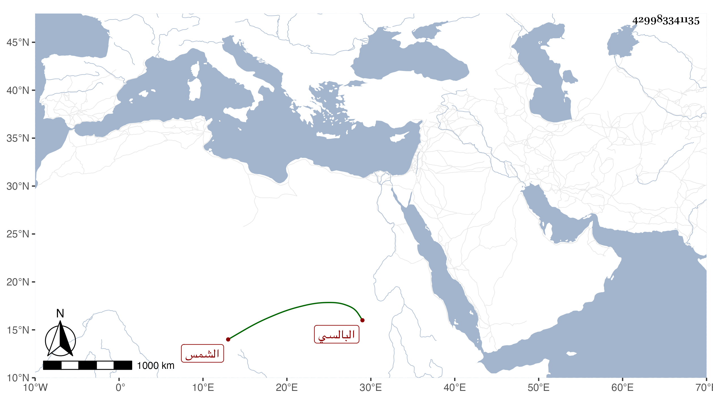

0902Sakhawi.DawLamic.ITO20230111-ara1.EIS1600.429983341135
Biography ID: 429983341135
470
محمد بن محمد بن أبي القسم الشمس البالسي . ولد في حدود الأربعين وسبعمائة وقال أنه دخل على أبي حيان وهو صغير وسمع كلامه بل قال الزين رضوان أنه ذكر أنه قرأ عليه من والضحى إلى آخر القرآن ولكن قال شيخنا لم أقف له على سماع منه ، وكان من أهل العلم بالقراآت واستجيز لولده البدر قبل العشرين . ومات في أوائل سنة ثلاث وعشرين .
